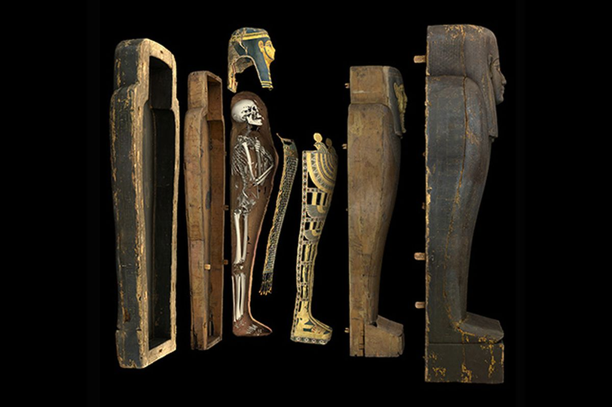
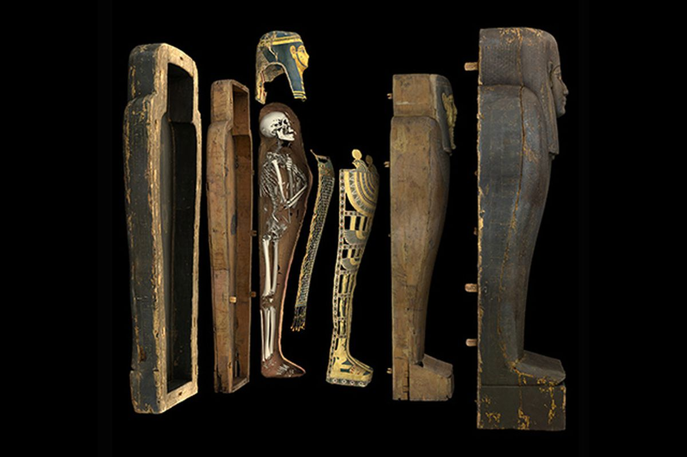

Ancient Egyptians believed in an afterlife when someone died. Mummification helped someone reach the afterlife as they believed that an afterlife could only exist if there was a form the ka (soul) could repossess after death. Egyptians believed that the only way to do this was if the body was recognisable. This is why they spent so long on the process of mummification and why Pharaohs began the building of their tombs during their lifetimes.
This is the step-by-step process of how mummification took place:
The Mummification Process
1. Insert a hook through a hole near the nose and pull out part of the brain
2. Make a cut on the left side of the body near the tummy
3. Remove all internal organs
4. Let the internal organs dry
5. Place the lungs, intestines, stomach and liver inside canopic jars
6. Place the heart back inside the body
7. Rinse inside of body with wine and spices
8. Rinse inside of body with wine and spices
9. Cover the corpse with natron (salt) for 70 days
10. After 40 days stuff the body with linen or sand to give it a more human shape
11. After the 70 days wrap the body from head to toe in bandages
12. Place in a sarcophagus (a type of box like a coffin)
13. If the person had been a Pharaoh, he would be placed inside a special burial chamber with lots of treasure.


 
